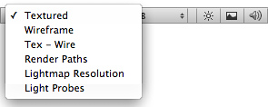
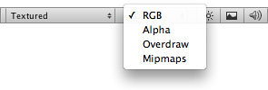
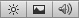

View Modes
The Scene View control bar lets you choose various options for viewing the scene and also control whether lighting and audio are enabled. These controls only affect the scene view during development and have no effect on the built game.
Draw Mode
The first drop-down menu selects which Draw Mode will be used to depict the scene.

Draw Mode drop-down
- Textured: show surfaces with their textures visible.
- Wireframe: draw meshes with a wireframe representation.
- Tex-Wire: show meshes textured and with wireframes overlaid.
- Render Paths: show the rendering path for each object using a color code: Green indicates deferred lighting, yellow indicates forward rendering and red indicates vertex lit.
- Lightmap Resolution: overlay a checkered grid on the scene to show the resolution of the lightmaps.
Render Mode
The next drop-down along selects which of four Render Modes will be used to render the scene.

Render Mode drop-down
- RGB: render the scene with objects normally colored.
- Alpha: render colors with alpha.
- Overdraw: render objects as transparent "silhouettes". The transparent colors accumulate, making it easy to spot places where one object is drawn over another.
- Mipmaps: show ideal texture sizes using a color code: red indicates that the texture is larger than necessary (at the current distance and resolution); blue indicates that the texture could be larger. Naturally, ideal texture sizes depend on the resolution at which the game will run and how close the camera can get to particular surfaces.
Scene Lighting, Game Overlay, and Audition Mode
To the right of the dropdown menus are three buttons which control other aspects of the scene representation.

The first button determines whether the view will be lit using a default scheme or with the lights that have actually been added to the scene. The default scheme is used initially but this will change automatically when the first light is added. The second button controls whether skyboxes and GUI elements will be rendered in the scene view and also shows and hides the placement grid. The third button switches audio sources in the scene on and off.
Page last updated: 2011-11-10